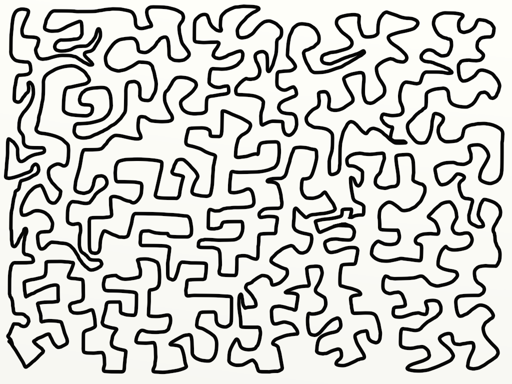

Jordan Curve Theorem
in the attached image: which points of the plane lie inside the polygon?
take a moment. it's not entirely obvious.

this is something i keep coming back to, the jordan curve theorem, and i want to try to explain it the way i understand it.
the theorem says: every simple closed curve in the plane divides it into exactly two regions, one bounded (the inside) and one unbounded (the outside), and the curve is the boundary of each. this is easy to understand.
a simple closed curve just means a continuous loop that doesn't cross itself. a circle qualifies. so does the convoluted mess in the picture, winding and doubling back without ever self-intersecting. hence, the theorem holds for both.
now, why is this hard to prove?
the first difficulty is that "inside" and "outside" aren't definitions, they're intuitions. to make them rigorous, you need to show that removing the curve from the plane leaves exactly two connected components. connected here has a precise meaning: a region is connected if you can travel between any two points in it without crossing the curve. proving that there are exactly two such components, no more, no fewer, for any simple closed curve, is where things get difficult.
the second difficulty is continuity. the theorem has to hold not just for smooth, well-behaved curves but for arbitrarily wild ones. a curve can be continuous and nowhere differentiable, fractal-like, filling space in disturbing ways, and the theorem still has to hold. the proof can't rely on the curve being nice.
one of the cleaner ways to see why it works is through the winding number. pick any point not on the curve and draw a ray outward in any direction. count how many times the curve crosses that ray, with sign (left to right crossings cancel right to left ones). if the total is zero, you're outside. if it's nonzero, you're inside. this is essentially the intermediate value theorem in disguise: as you move continuously from a point far away (winding number zero) to a point deep inside, the winding number has to change, and a continuous integer-valued function can only change by jumping, which means crossing the curve.
this also explains why the proof works for wild curves but not just circles. for a circle you can see the answer. the winding number argument doesn't care what the curve looks like, it only uses the fact that the curve is a continuous closed loop. that's the level of generality the proof operates at!
the theorem matters quite a lot in practice. every time your maps app checks whether you're inside a delivery zone, every time a game engine decides whether a bullet hit landed inside a hitbox, it's running point-in-polygon.
that is, the idea: cast a ray from the point and count how many times it crosses the boundary. odd crossings, you're inside. even, you're outside. the jordan curve theorem is the reason that algorithm is guaranteed to work!